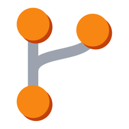

More apps by Terrabit
Other modules from the same publisher, built to work together. All apps →

Transport config changes across envs
Configuration data set up by hand in a development or test database (stages, tags, parameters, master data of any model) has to be entered again in production, with the risk that the two end up different. This technical module exports such data to CSV files inside an Odoo module kept in Git, so the change reaches the other databases by updating that module, in a way similar to SAP transport requests.
Export configurations: each configuration names a model, the fields to export and
an optional domain. Generate File on the form, or Actions > Export CSV on
several selected configurations, builds one CSV file per configuration. The first
column is always the External ID (id) of the record, so the import updates the same
records instead of creating duplicates.
Relations as external IDs: Many2one and Many2many fields are exported in a
field/id column with the external IDs of the related records. Records that have no
external ID receive a stable __export__ one.
Git repositories: a repository holds the Git URL, the branch, the module code (the folder of the target module inside the repository) and the HTTPS user name and token. The credentials are visible only to administrators.
Commit and push: at export the repository is cloned in a temporary folder, the CSV
is written to <module>/data/<model>.csv, the file is added to the data list of the
module's __manifest__.py and the module version is increased. All the configurations
of one repository go into a single commit, pushed to the branch.
Trace in the chatter: each configuration keeps the generated CSV as an attachment in its chatter, with the result of the push. A rejected push is reported as a failure and Last Export is updated only for the configurations that reached the repository.
Where to configure: in developer mode, Settings > Technical > Transport >
Repositories and Settings > Technical > Transport > Configurations. Only
Settings administrators have access. The Python package GitPython must be
installed on the server.
__manifest__.py is rewritten from its parsed content, so its comments
and formatting are lost.field header while the
values were external IDs, so the target database looked them up by name and failed
or picked the wrong record. Relational columns now use the field/id header, and
related records without an external ID get a stable __export__ one instead of a
database-specific model,id value.base.group_system); the export checks it on the server too.
Behavior change: non-administrator users lose access to the Transport menus.write_csv_and_update_manifest() accepted any repo_root and a
module code such as ../outside, so it could write files anywhere on the server.
The repository helpers are now private (_clone_to_temp, _write_csv_and_update_manifest,
_commit_and_push), the module code may contain only letters, digits and underscores,
the target path (symlinks resolved) must stay inside the clone, and the module manifest
is checked before anything is written.except: pass blocks replaced with contextlib.suppress for the same exceptions;
behavior is unchanged. The test tear-downs use the same pattern.Our 600+ apps on the Odoo Apps Store are used in Odoo implementations across Europe, the Americas, Asia and Africa — by companies we have never even met. That is the advantage of building modules that simply work.
Questions about this module, or need it adapted to your processes? Write to us — the developers who build it will answer.
Terrabit support →Other modules from the same publisher, built to work together. All apps →